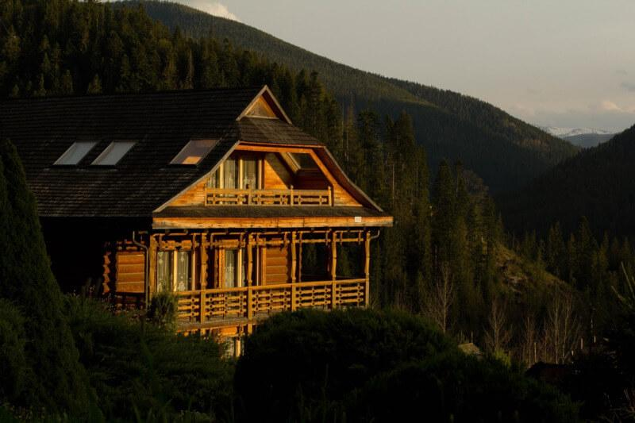
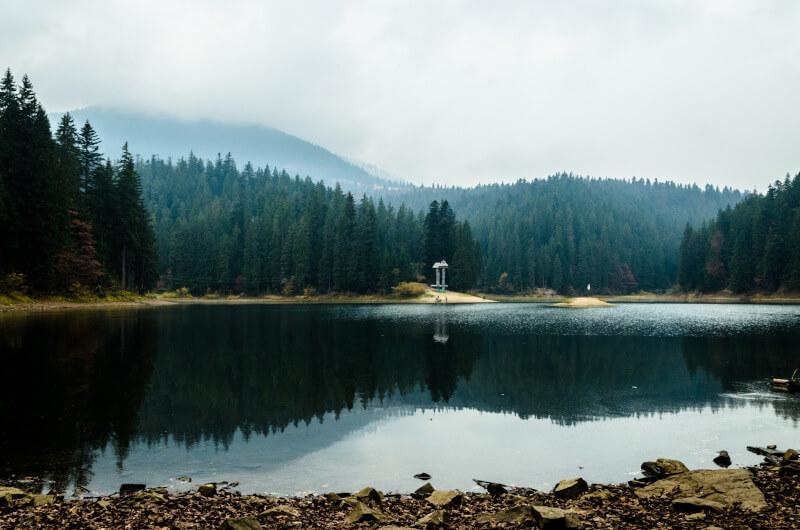
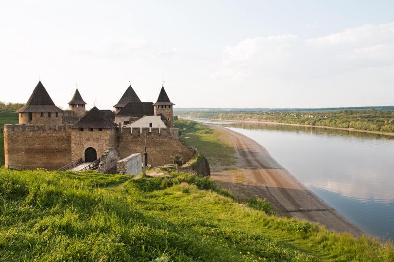
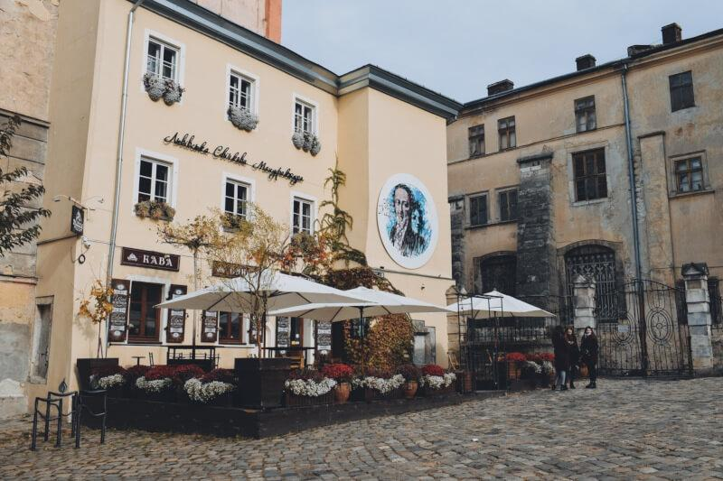
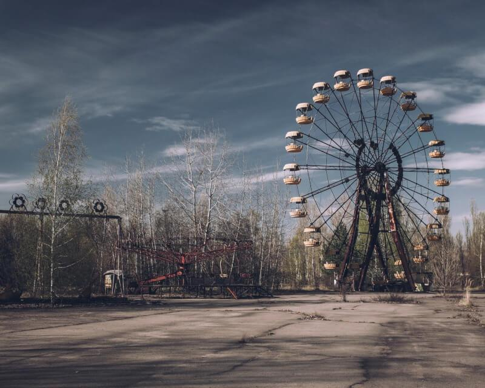

Говерла

Українські Карпати зачаровують своєю величчю та грайливістю хаотично розкинутих водоспадів.
Найбільше
вирізняються з-поміж гір двотисячники, яких тут налічується аж шість.
Найвищою з гірських вершин не
лише українських Карпат, а й України загалом є Говерла.
Висота вершини складає 2061 м, знайти її
можна
на
гірському масиві Чорногора.
Розташована Говерла на межі Закарпатської області та
Івано-Франківщини.
Підйом на Говерлу з групою та професійним гідом можна забронювати на сайті
FLIXESS,
або залишити заявку на сайті,
після чого наші менеджери підберуть тури під потрібні дати,
бюджет і твій рівень підготовленості.
Переконайся сам: тур у Карпати наповнює, розслабляє
та перезаряджає внутрішню батарейку.
Синевир

Одне з найцікавіших місць Закарпаття — високогірне озеро Синевир, яке ще називають «Морським оком»
Карпат.
Воно розташоване на території колишнього Міжгірського району Закарпатської області. Існує версія,
що
озеро
Синевир виникло відразу після завершення льодовикового періоду близько 10 тис. років тому.
Влітку
сонце
прогріває воду лише до +20ºС, проте на глибині температура води не перевищує 4–5ºС.
Тур на Синевир
із
FLIXESS — це чудова можливість відвідати легенду й одне з наймальовничіших природних водойм України.
Хотинська фортеця

Любиш архітектуру та історію? Насолодись старовинними архітектурними рішеннями й атмосферою
Середньовіччя
на території Хотинської фортеці. На екскурсіях Україною до Хотинської
фортеці можна
відвідати підвали
колишніх
казарм і побувати на виставці холодної та вогнепальної зброї. Для поціновувачів фестів тут
теж
знайдеться чим зайнятись:
щороку в Хотині Чернівецької області проводять міжнародний фестиваль
середньовічних лицарських боїв.
Львів

Ще один чудовий варіант для туру вихідного дня — відвідини Львова, міста з особливою атмосферою,
міста
кави,
левів, джазу, дощу, шоколаду й терас. Усі ці невеличкі радощі життя, які встигли перерости у
традиції для кожного львів'янина.
Наостанок, місто, яким більш ніж пів тисячоріччя правили королі.
Доля тутешньої архітектури як і історії загалом не була простою:
на одні падали літаки, інші
обкрадали,
треті розбирали на частини. Проте зрозуміло одне: на красу й пишність у Львові не скупилися.
Саме
тому в
місті Лева приємно заблукати, адже навкруги, куди не подивись — найнесподіваніші будівлі з
найприголомшливішими історіями.
Припʼять

1986 рік увійшов в історію людства не лише відкриттям студії Pixar, а й катастрофою на Чорнобильській
АЕС.
Катастрофі було присвоєно рівень INES 7 (найвищий за міжнародною шкалою ядерних подій),
а
результатом аварії стало повне відселення 30-кілометрової зони. Упродовж років рівень радіації у
Чорнобилі
значно знизилися, було проведено роботи з дезінфекції територій, а зона вже понад п'ять
років
відкрита для екскурсій.
Боїшся радіації? Для порівняння: для тебе приїхати в тур у Чорнобиль буде
безпечніше, ніж полетіти кудись
літаком чи
зробити планову флюорографію. Хоча, звісно, яблука в Прип'яті зривати та їсти не варто,
як і
пити воду зі ставка-охолоджувача.